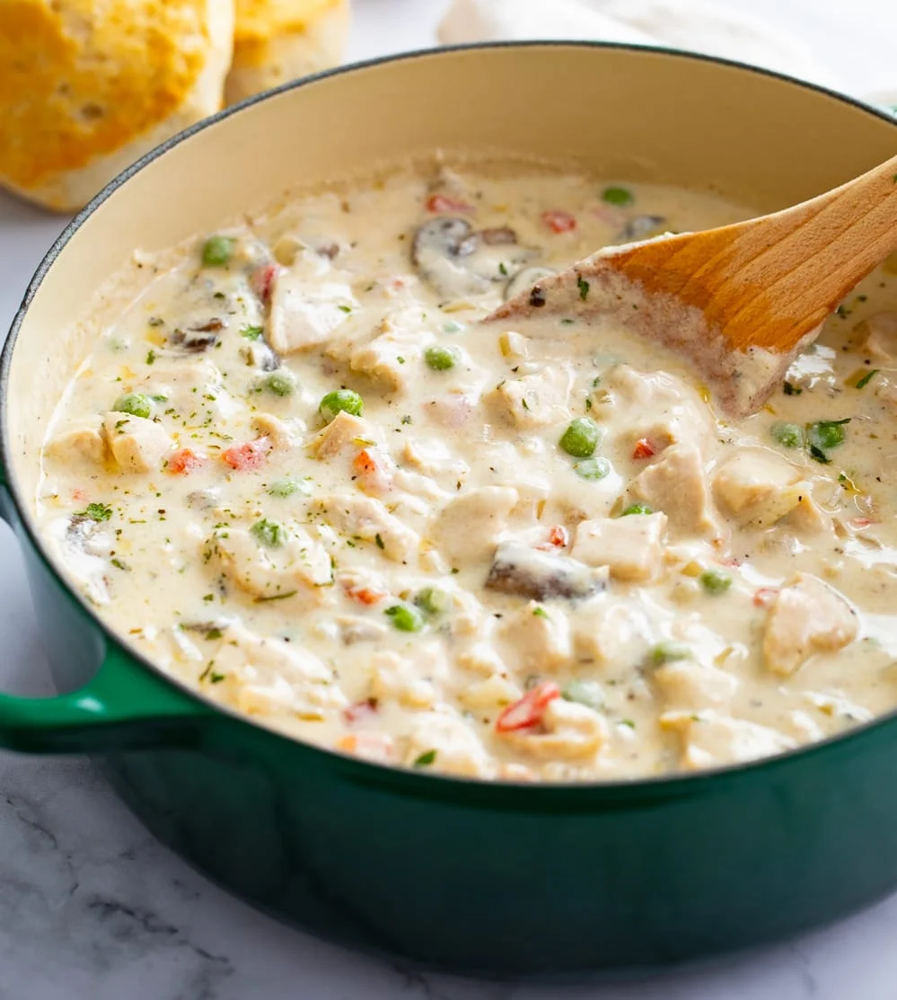

Chicken A La King

Creamy Comforting Chicken a la-King
Chicken A La King is a delightful and creamy dish that is sure to please. This recipe features tender chicken breast meat in a rich and savory sauce, complemented by the flavors of bell pepper, mushrooms, and a touch of sherry. Served hot, it is a comforting and satisfying meal that is perfect for any occasion.
-
2 tablespoons butter
-
1 green bell pepper, chopped
-
1 cup sliced fresh mushrooms
-
1 cup chicken broth
-
2 tablespoons all-purpose flour
-
2 ¼ cups cooked, cubed chicken breast meat
-
1 cup sour cream
-
2 egg yolks
-
1 pimento, chopped
-
4 teaspoons cooking sherry
-
salt and pepper to taste
-
Melt butter in a large skillet over medium high heat. Saute bell pepper and mushrooms until tender, then stir in broth and flour and cook, stirring, until thickened.
-
Add chicken, heat through and remove from heat.
-
In a small bowl combine sour cream, egg yolks, pimento, sherry, salt and pepper and mix together. Add this mixture to chicken mixture in skillet and heat thoroughly, stirring. Serve hot.